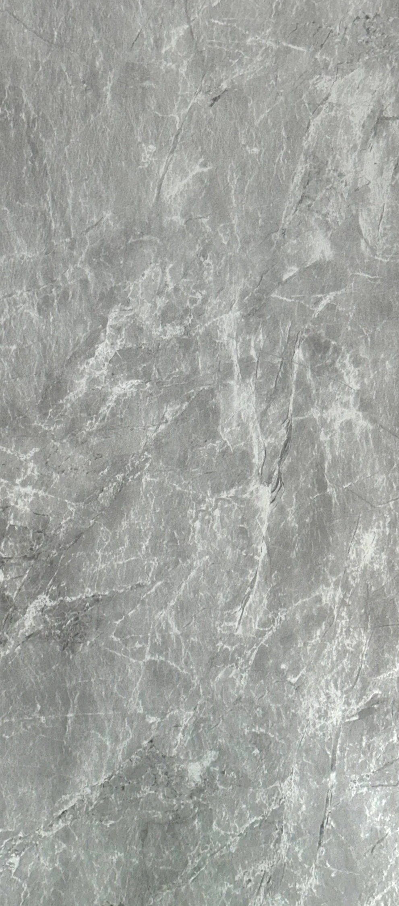

ГРИФЕЛЬ / КАМЕННЫЙ РИСУНОК01
Финиш уже на панели.
После монтажа поверхность не нужно красить. Рисунок и цвет становятся частью интерьера сразу — от акцентной стены до отделки всей комнаты.

ПАНЕЛИКОЛЛЕКЦИЯ МАТЕРИАЛОВ
ПАНЕЛИ ДЛЯ ВАШЕГО ИНТЕРЬЕРА
Грифель / Рипс капучиноЛаминированные панели ПВХ
Визуализация интерьера
Красиво снаружи. Продумано внутри.
Камень, дерево или текстильный рисунок — выбирайте настроение комнаты. Декоративные панели ПВХ объединяют выразительную отделку и удобство повседневного ухода.
Материал под другим углом
Жёсткость начинается с рёбер внутри профиля. Клеевой слой соединяет основу с плёнкой. Декор завершает поверхность — и задаёт её настроение.
Два декора · три слоя · соединение шип–паз
Продуманное соединение
Шип следующей панели входит в паз предыдущей. Система направляет последовательную сборку и помогает получить аккуратный стык. Камеры и продольные рёбра придают профилю жёсткость без сплошной массы материала.
Коллекция материалов
От спокойных каменных оттенков
до тёплых текстильных рисунков.
Найдите материал для своего пространства.
По этому названию ничего не найдено.
В повседневной жизни
Для гостиной, прихожей, рабочей зоны или спокойного фона в спальне. Комбинируйте декоры и оставляйте интерьеру пространство для жизни.
Протирайте мягкой влажной тканью. Для обычных загрязнений используйте воду с мягким мыльным средством, затем убирайте остатки чистой тканью. Избегайте абразивов и хлорсодержащих составов.
При ламинации декоративная плёнка соединяется с основой клеевым слоем. При термопереводе рисунок переносится на поверхность с помощью температуры. Выбирайте по рисунку, фактуре и задаче помещения.
Основа ПВХ устойчива к влаге. Для зон с прямым контактом с водой подбирают подходящее покрытие и схему монтажа: важны отделка, стыки и примыкания.
Начните с двух-трёх декоров и сравните их с полом, мебелью и текстилем. Перед окончательным выбором посмотрите физический образец при освещении вашего помещения.
Ваш следующий интерьер
Выберите декор и расскажите о помещении. Подготовьте подборку для обсуждения проекта или расчёта стоимости.